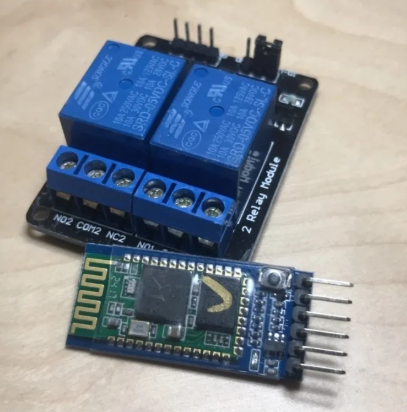
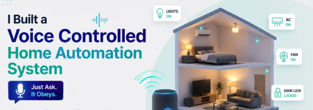
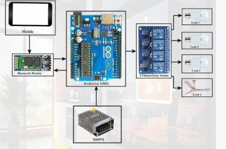
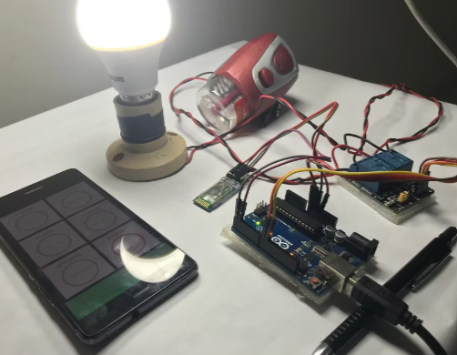

Light Control
Controls the light using the first relay output.
VJAYA ROBOTICS PROJECT 03
ARDUINO PROJECTControl household appliances such as lights and fans using Arduino UNO, a two-channel relay module and serial voice commands.
Explore ProjectPROJECT OVERVIEW
Smart Home Automation is an Arduino-based project that controls household appliances using text commands received through serial communication.
The Arduino UNO controls two relay outputs. One relay is assigned to the light and the other to the fan. The program receives commands, converts them to lowercase, checks the requested appliance operation and switches the corresponding relay.
The program accepts commands such as "light on", "light off", "fan on" and "fan off".




SYSTEM CAPABILITIES
Controls the light using the first relay output.
Controls the fan using the second relay output.
Accepts text commands generated from voice input.
Receives serial data at 9600 baud.
Accepts short and alternative command phrases.
Converts commands to lowercase and removes extra spaces.
HARDWARE REQUIREMENTS
HARDWARE CONNECTION
| Relay Connection | Arduino UNO Pin | Function |
|---|---|---|
| Relay 1 IN | Digital Pin 7 | Light control |
| Relay 2 IN | Digital Pin 8 | Fan control |
| Communication Setting | Value |
|---|---|
| Communication | Hardware Serial |
| Baud Rate | 9600 |
| Command Ending | Newline or carriage return ignored |
Smart Home Automation Wiring Diagram
Your actual wiring diagram will appear here.SYSTEM OPERATION
The descriptions of relay output levels below reproduce the digitalWrite values in your supplied sketch. Actual appliance ON/OFF behavior depends on the relay module's input logic and wiring.
SOFTWARE REQUIREMENTS
COMMAND SYSTEM
The following commands are supported by the original Arduino program.
| Appliance | Command | Arduino Output |
|---|---|---|
| Light | light off | Pin 7 HIGH |
| Light | turn off light | Pin 7 HIGH |
| Light | light on | Pin 7 LOW |
| Light | turn on light | Pin 7 LOW |
| Fan | fan off | Pin 8 HIGH |
| Fan | turn off fan | Pin 8 HIGH |
| Fan | fan on | Pin 8 LOW |
| Fan | turn on fan | Pin 8 LOW |
PROGRAMMING
Download the original Arduino project sketch.
PROJECT DEMONSTRATION
Smart Home Automation Demonstration
Your project demonstration video will appear here.